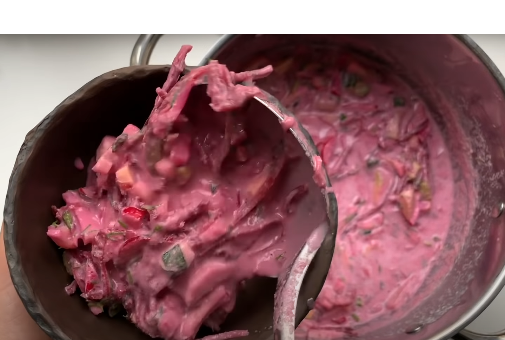

Traditional Cold Beet Soup

Author: Valters Hūns
Date Published: 2023-04-23
Prep Time: 30 minutes
Cook Time: 20 minutes
Total Time: 50 minutes
Serves: 4
Category: Soup
Cuisine: Latvian
Ingredients
- 5 medium sized potatoes
- 250 g bologna sausage
- 1.5 l kefir
- 1 cucumber
- 3 eggs
- 0.5 l pickled beets
- 50 g of dill
- 50 g of spring onions
- 1/2 teaspoon of mustard
- 1/2 teaspoon of horseradish
- A pinch of salt
- A pinch of pepper
Instructions
- Boil 5 potatoes until they are soft. At the sime time cook 3 hard boiled eggs.
- Chop all of the ingredients into small pieces/cubes.
- Put ingredients into one bowl and add kefir. Mix all the ingredients.
- Add spices of your liking, for example, salt, pepper, mustard, horseradish etc.
- Leave the soup in refrigerator for about 25-30 min for better taste.
Nutrition Information
- Serving Size: 1 serving
- Calories: 150 calories
- Fat Content: 7g
- Sugar Content: 10g
- Protein Content: 6g
Suitable for Low Fat Diet
Reviews
Average rating: 4.5 (based on 16 reviews)